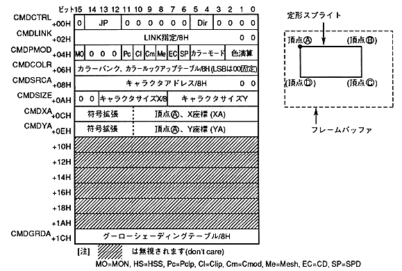

The standard sprite drawing command draws a character pattern in the frame buffer. When drawing, you can draw the character pattern upside down and horizontally flipped to the specified coordinates.
定 Standard sprite drawing command when the end bit is 0B and the command selection bit is 0000B. ¡Standard sprites cannot be rotated 90 °. If you want to rotate 90 degrees, use the sprite drawing command.
The contents of the command table are as follows.

The standard sprite drawing command is defined as follows.
- When the end bit is set to 0B and the command selection bit is set to 0000B, it becomes a standard sprite drawing command.
- Specify the jump format. When the jump format is assign or call, divide the address of the command table to be processed next by 8H and set to CMDLINK.
- Set the character pattern reading direction. You can draw by flipping upside down or left and right by specifying the reading direction.
- Set pre-clipping. Specify valid or invalid considering the clipping area and drawing position of the part.